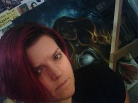
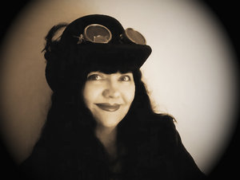
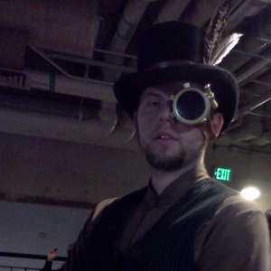
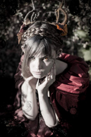
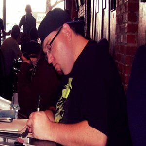
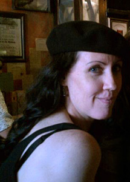
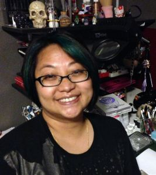
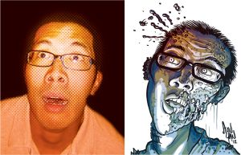

Mike Cervantes
 His full given name is Miguel Javier Cervantes Jr. But you can just call him Mike. He holds a bachelor’s of Creative Writing from The University of Texas at El Paso. He’s a life long comic book, animation, and video game enthusiast, and there isn’t a trope, cliche, or storyline wrinkle that ever escapes his knowledge. Currently, he’s writing his own online fiction series, The Scarlet Derby & Midnight Jay, which you can read at thescarletderby.tumblr.com
His full given name is Miguel Javier Cervantes Jr. But you can just call him Mike. He holds a bachelor’s of Creative Writing from The University of Texas at El Paso. He’s a life long comic book, animation, and video game enthusiast, and there isn’t a trope, cliche, or storyline wrinkle that ever escapes his knowledge. Currently, he’s writing his own online fiction series, The Scarlet Derby & Midnight Jay, which you can read at thescarletderby.tumblr.com
Robert Elrod
Robert is a self-taught artist who works with a variety of mediums including pencil, color pencil, ink, watercolor, gouache, acrylic and digital. Robert’s artwork has appeared on the covers of several novels and anthologies from small-press horror authors and publishers, including Permuted Press. Tickling A Dead Man: Stories About George is his self-published comic book in which he relentlessly tortures his misanthropic title character by forcing him to face his deepest fears and anxieties. His comics also appear within the pages of the “Best New Zombie Tales” series from Books of the Dead Press. He’s contributed pinup art to publications by Bluewater Comics, Creator’s Edge Press, Angry Dog Press, British Fantasy Society, Lovecraft eZine, The Big Adios, and This Is Horror.
J Zoe Frasure
J Zoe Frasure began her career as an artist at Walt Disney World in Orlando, FL. Bent on pursuing her career, she returned to Ohio to achieve her art Degree. Eventually, she found her way to Los Angeles, working in the dark side of Hollywood, as a storyboard and concept artist in indie horror on such films as the “Hatchet” movie series and “The Collector.” A diverse artist, Zoe has spent the past 6 years designing collectibles and creating original souvenirs for such notable clients as Disney, Hard Rock Cafe and Sea World. She finds a strange balance between making cute Disney characters by day and planning out slashing people to bits by night.
On the lighter side, Zoe has made a reputation in the advertising world creating storyboards for commercials for such names as Cindy Crawford Home, Rooms to Go and Ashley Furniture. Her first book cover, “Tennis Dates” premiered in 2008. Since 2004, Zoe has provided the artwork for the infamous Mr. Bones Pumpkin Patch in Beverly Hills, a mecca for celebrity sitings.
http://www.mrbonespumpkinpatch.com/, Film Credit, Art portfolio
Julie Hamilton
Julie Hamilton is a graphic designer, digital artist, Denver native and all-around crafty person. With an eclectic professional background which includes fashion design, costuming, and CAD drafting, she brings a unique perspective to all her projects. In addition to offering professional design services, she also sells a line of posters, mini prints, stationery, collectibles and other fun miscellany through her company BottleCap Graphics Ltd., all while under the close supervision of Sasha the studio cat. See what she’s been up to lately at www.bottlecap-graphics.com.
Ash Helms
Ash Helms is an illustrator and dancer working in Denver. When he isn’t drawing pretty pictures or teaching people how to dance, he spends his time with his two cats, whose presence he tolerates with quiet dignity.
Aria Keehn
Aria is a local artist from Denver (though born in the Otherworlds) she was mostly raised in Colorado. Aside from a brief portion in a rainy Washington town as a squawking infant. Which remains mostly irrelevant. She began drawing as soon as she could hold a crayon and has not stopped the madness since.
In her art, she likes to reflect the monsters she meets throughout the day and their naturally unnatural habitats. Swirling skies with beasts sprouting clockwork from their bodies, deer manifesting from trees and dragons hatching from the moon are just some of the common visuals found in her work which she often refers to as surrealist in nature.
In addition to the watercolour and pastel she generally paints in, she also enjoys a wide variety of other visual art forms including the hand binding of books and the weaving of small creatures from yarn and wire known as ‘Yarnlings’
These and more can be viewed over various reaches of the internet under her art handle ShePaintsWithBlood on deviantART, Facebook and Tumblr. When she has not locked herself up in the Otherworlds, she can also be found selling and showing her art live in Downtown Denver on First Fridays.
Chaz Kemp
Chaz Kemp is an Art Nouveau illustrator living in Denver, CO. He uses modern, digital techniques to create his steampunk, horror and fantasy pieces and he was nominated for a Bram Stoker award in 2012. When he’s not performing with his band Pandora Celtica, he’s working hard on a top secret project with up-and-coming author Carolyn Fritz! You can visit him on the web at www.ChazKemp.com and you can also hang out with him on his Facebook page: Chaz Kemp Illustration… if you dare!
Dustin Leitzel
Pharmacist by day and photographer by night. Based in Denver, Colorado.
Initially my focus was on landscapes and architecture, however over the past 4 years I have really enjoyed creative portraiture/cosplay photography. The challenge of emphasizing both costume and model has helped me evolve the way I approach all forms of photography.
Sarah Menzel
Sarah is an illustrator based in the glorious suburbs of Denver. Having a passion for visual storytelling, she has been drawing nonstop since childhood. With a BFA in Sequential Art from the Savannah College of Art and Design, she has worked professionally as an illustrator, graphic novelist, and storyboard artist for animation. Currently she is working on visual development for Inherent Games, a company that strives to create fun language learning apps. If you can’t find Sarah compulsorily creating something, she’s probably at a nerdy convention somewhere or watching Korean soap operas with her dogs.
Jason Montoya
CJason is a Colorado Native, born and raised in Colorado Springs. He is an artist who works with a variety of mediums including watercolor, gouache, pencil, color pencil, ink, oil, acrylic, airbrush, and digital.
He is the founder of Themis Comix and is currently working on his creator owned comic series Baron Von Saturday’s Tales From Beyond, as well as working with author Christopher M. Salas to bring the pages of his novel’s to life as graphic novels, the Abigail: Curses and Demons series. Jason does it all: penciler, inker, letter, co-plotter, editor, designer and writer. He has been published in various publications ranging from super hero comics to Horror and Sci Fi. You can keep up with Jason on his blog.
http://jmontoyaart.blogspot.com/
And stay up to date with all things Themis on the Themis Comix blog.
http://themiscomix.blogspot.com/
John-Michael O’Brien
For over six years John-Michael’s one man photographic operation, the Camera NInjas, has been doing cosplay photography on scene, in the studio, and at conventions throughout Colorado and beyond. A veteran of over 20 conventions as a photographer, he strives to bring a creative eye with a technical basis to the art and science of cosplay photography.
When he’s not behind the lens he likes to focus on his other hobbies including drawing, electronics, and music.
Kathryn S Renta
Kathryn S. Renta is an award winning artist and recent immigrant to Colorado. She grew up in California with a vivid imagination and unquenchable curiosity. With an intense fear of blank pages, she set out to fill every single one she could. That included sketchbooks, notebooks, journals, random bits of paper and the wall behind her childhood bed.
In addition to 15+ years as a graphic artist and illustrator, her work includes over a decade of lettering comics for Viz Media, Dark Horse Comics, DC Comics and several independent publishers.
Her art is mostly a blend of anime/manga style with a little bit of realism injected into her pieces. Copic markers are her current favorite medium of choice. She has played with water color, watercolor pencils, pencils, and many other artsy mediums and has mixed them all together at times.
Sarin Tatroe
Sarin is a local artist living in Thornton who has been drawing on and off since she can remember. She is currently trying her hand out as a freelance artist after bidding the corporate world farewell to be a stay at home mom. When not “arting”, as she calls it, she loves to daydream and role play in between chasing her pre-schooler around the house.
Her art is mostly a blend of anime/manga style with a little bit of realism injected into her pieces. Copic markers are her current favorite medium of choice. She has played with water color, watercolor pencils, pencils, and many other artsy mediums and has mixed them all together at times.
She likes to wonder what stories people will come up with when diving into her art since she believes that all art has a story. Sarin is currently working on a few personal projects that seem to never have an end or a definite beginning. Her works may be viewed at deviantArt. More recent works are usually able to be viewed at local conventions.
Sean Tiffany
Sean Tiffany lives in Boulder, Colorado and has been a working artist and illustrator for the last twenty years.
He has worked for companies such as Marvel Comics, Time Magazine, Sports Illustrated Magazine, Stone Arch Books, and The Geppetto Advertising Group. In 1998 he wrote, drew, and self published his first comic book called Exit 6 which earned him a Russ Manning Most Promising Newcomer Award nomination.
A freelance illustration career has kept him away from comics for years but his love for the medium just wouldn’t go away.
Sean’s newest project, OilCan Drive, combines a web comic, print comics, videos, art, and music.
You can find his projects at www.oilcandrive.com, www.seantiffany.com and www.seantiffany.blogspot.com.
Stan Yan
Stan Yan grew up in Denver, Colorado and went to school at the University of Colorado in Boulder where he got his bachelor’s degree in accounting. Due to the lack of sex-for-recruiting for accounting students, Yan’s life took the tragic turn into sales for the securities industry, where he wallowed in ethical poverty on-and-off for thirteen years.
Yan takes his frustrations out by penning graphic novels such as The Wang. In 2005, Yan has gave up on financial security and become a full-time freelance cartoonist, illustrating SubCulture for Ape Entertaiment and Action Lab Danger Zone, creating comic strips for the financial and sales industry, drawing zombie caricatures, and picking up odd illustration and teaching jobs when folks are feeling agonizing pity for him. Stan teaches Summer camps, after school programs, workshops, and helped to develop a degree program in graphic storytelling as an adjunct faculty member at the Community College of Aurora. He writes and color the REVVVelations webstrip. Recent credits include illustrating the comic book “The Adventures of Health Team 4” for Kaiser Permanente; writing Vincent Price Presents #33 for Bluewater Productions; and Yan “Food Fright” for the Melting Pot restaurant.
Current projects, inquiries, and complaints can be lodged at http://stanyan.me/